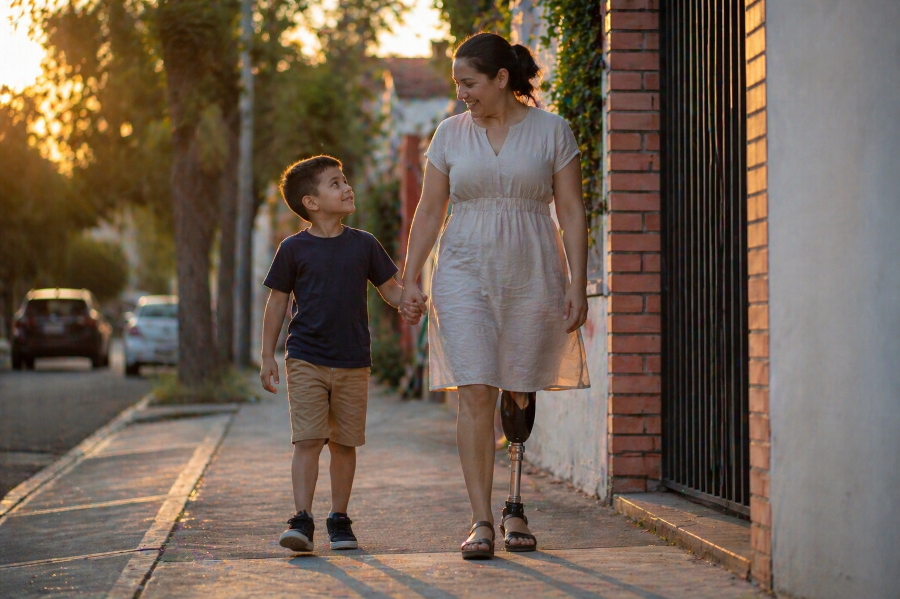
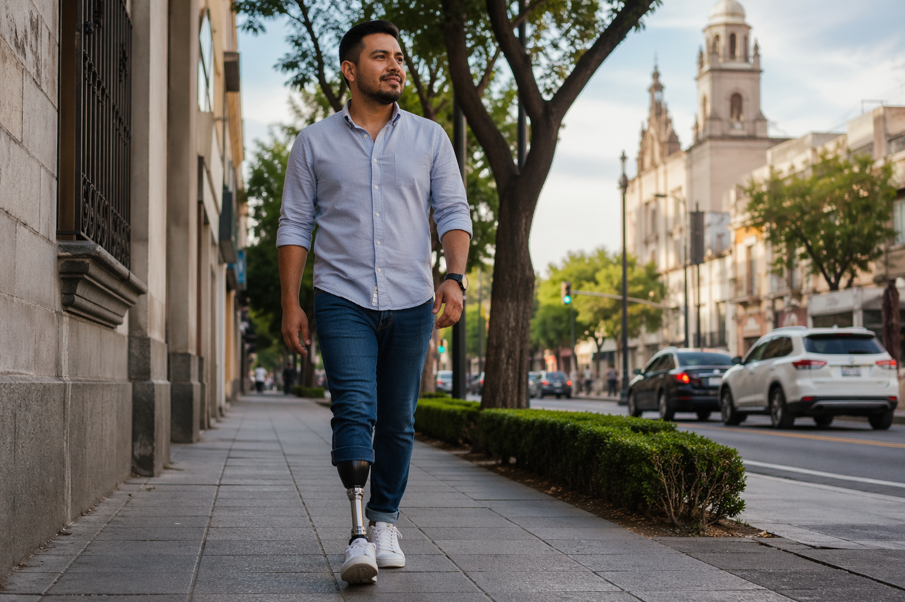

Pie protésico de fibra de carbono con Retorno Activo de Energía. Diseñado en México para eliminar costos de importación, reducir tiempos de espera y devolver movilidad real.
Validación estructural en colaboración con instituciones de alto nivel en México. Próximos ensayos clínicos en proceso.
⚠ PRECAUCIÓN — Dispositivo en fase de investigación. Uso limitado a protocolos de validación conforme a normativa vigente.

Altos costos de importación, largos tiempos de espera y falta de disponibilidad local limitan el acceso a tecnología protésica de alto desempeño en México.

Desarrollamos un pie protésico de fibra de carbono con retorno activo de energía, fabricado localmente en Querétaro para ofrecer disponibilidad inmediata, costos optimizados y desempeño funcional real.

VASAGIO es una iniciativa enfocada en el desarrollo de tecnología protésica avanzada, combinando ingeniería biomédica, manufactura local y validación clínica.
Nuestro objetivo es mejorar la movilidad de pacientes y ofrecer soluciones accesibles para clínicas y profesionales de la salud.
Si deseas colaborar, conocer más sobre la tecnología o explorar oportunidades, puedes contactarnos directamente:
Fundador: IB. Mauricio del Valle Sagahon
Email: mauricio.delvallesn@gmail.com
Ubicación: Querétaro, México
Próximamente habilitaremos acceso para pruebas clínicas y distribución.